This specification defines an “IME API” that provides
Web applications with scripted access to an IME
(input-method editor) associated with
a hosting user agent. This IME API includes:
An InputMethodContext interface, which provides methods to
retrieve detailed data from an in-progress IME
composition.
A Composition interface, which represents read-only
attributes about the current
composition, such as actual text
and its associated information.
This API is designed to be used in conjunction with DOM events
[DOM-LEVEL-3-EVENTS].
Status of This Document
This section describes the status of this document at the time of its publication. Other
documents may supersede this document. A list of current W3C publications and the latest revision
of this technical report can be found in the W3C technical reports
index at http://www.w3.org/TR/.
This document is a proposal that is being made available for public
review in order to solicit feedback, particularly from
implementors, with a goal of potential cross-browser implementation
and standardization.
This document was published by the Web Applications Working Group as an Editor's Draft.
If you wish to make comments regarding this document, please send them to
public-webapps@w3.org
with [ime-api] at the start of the subject header
(subscribe,
archives).
All comments are welcome.
Publication as a Working Draft does not imply endorsement by the W3C Membership.
This is a draft document and may be updated, replaced or obsoleted by other documents at
any time. It is inappropriate to cite this document as other than work in progress.
Even though existing Web-platform APIs allow developers to implement
very complicated Web applications, such as visual chat applications or
WYSIWYG presentation editors, developers have difficulties when
implementing Web applications that involve
input-method editors.
To mitigate the difficulties,
the DOM
Level 3 Events specification[DOM-LEVEL-3-EVENTS]
introduces composition events
to retrieve composition text
while it is being composed in an associated IME.
However, Web applications can still run into difficulties when
they want text input on non-editable elements such as the
<div> element without contenteditable
attribute being set to true, or interact with IMEs;
those difficulties include
the fact that a Web application cannot do the following:
get input outside any editable element even with focus
indicate to the user whether the Web application renders
composition text by itself, or needs to ask user agents to
render it
determine the place where user agents render composition text
To solve these IME-related problems, this specification introduces
an IME API that allows Web applications to interact with the IME.
This specification introduces interfaces for
compositions,
so Web applications can read detailed composition data.
A Composition object provides a reference to an ongoing IME
composition,
so Web applications can retrieve the composition text and
its attributes. In addition,
this API also gives Web applications the ability to
give a hint as to where to position a
composition window.
This example shows the source which gives a hint for an IME
where the application wants it to avoid placing UI elements. A simple
web search page which gives a user suggestions while the user is
doing composition.
Example 1
<!DOCTYPE html><html><head><styletype="text/css">#search0 {
max-width:400px;}#input0 {
width:100%;}#suggest0 {
width:100%;
list-style: none;
margin:0;
padding:0;
border-style: solid;
border-width:1px;
border-color:#000;}</style><scriptlanguage="javascript"type="text/javascript">function init(){var node = document.getElementById('input0');// This code only handles the compositionupdate event for brevity of the// example, but of course other input field changes should also be handled.
node.addEventListener('compositionupdate', onCompositionUpdate,false);}// Sends an XHR request to get search suggestions.// Upon receiving the result, expandSuggest() is called back.function getSuggests(query){// For brevity, implementation of this function is omitted.}function expandSuggest(candidates){// Callback after getting search suggestions.var suggest = document.getElementById('suggest0');var i;// Clear old suggestions.for(i =0; i < suggest.childNodes.length; i++){
suggest.removeChild(suggest.childNodes[0]);}// Render new suggeston list.for(i =0; i < candidates.length; i++){
suggest.appendChild(document.createElement('li'));
suggest.childNodes[i].textContent = candidates[i];}// Set exclusion area hint for the IME.var input = document.getElementById('input0');var context = input.inputMethodContext;var relative_x = suggest.offsetLeft - input.offsetLeft;var relative_y = suggest.offsetTop - input.offsetTop;
context.setExclusionRectangle(input, relative_x, relative_y,
suggest.offsetWidth,
suggest.offsetHeight);}function onCompositionUpdate(event){var query = document.getElementById('input0').value;
getSuggests(query);}</script></head><body><divid="search0"><inputtype="text"id="input0"placeholder="search here"><ulid="suggest0"></ul></div></body></html>
This example shows the source which draws composition text in
its own style.
Note
For the usage of compositionupdate event, see also
the note in
Drawing Composition Text
section.
Example 2
<!DOCTYPE html><html><head><style>.clause {
margin-right:2px;
border-style: solid;
border-width:0px0px1px0px;
border-color:#333333;}.selected {
border-width:0px0px2px0px;
border-color:#000000;}</style><scriptlanguage="javascript"type="text/javascript">// compositionupdate event handlerfunction onCompositionUpdate(event){var target = event.target;// Remove all children.while(target.childNodes.length <0){
edit.removeChild(edit.childNodes[0]);}// Get the IME context.var ctx = target.inputMethodContext;// Create clause spans.var text = ctx.text;var segments = ctx.segments;for(i =0; i < segments.length; i++){var span = document.createElement('span');
span.classList.add('clause');var selected =false;if(segments[i]== ctx.selectionStart){
selected =true;
span.classList.add('selected');}var end = text.length;if(i < segments.length -1){
end = segments[i +1];}
span.textContent = text.substring(ctx.segments[i], end);
target.appendChild(span);if(selected){
ctx.setCaretRectangle(document.body, rect.left, rect.top,
rect.width, rect.height);}}// Prevent the browser from drawing composition text.
event.preventDefault();}function init(){var composition = document.getElementById('composition');
composition.focus();
composition.addEventHandler('compositionupdate', onCompositionUpdate,false);}</script></head><bodyonload="init();"><divid="composition"></div></body></html>
2. Background: What’s an Input Method Editor?
This section is non-normative.
An IME (input-method editor) is an application
that allows a standard keyboard (such as a US-101 keyboard) to be used
to type characters and symbols that are not directly represented on the
keyboard itself. In China, Japan, and Korea, IMEs are used ubiquitously
to enable standard keyboards to be employed to type the very large
number of characters required for writing in Chinese, Japanese, and
Korean.
On platforms with touch-based input device such as mobile phones,
an IME also plays a role to type text that a simple on-screen keyboard
cannot type directly.
A system IME is an IME already installed
on a user's system.
A composer is a context-free parser that
composes non-ASCII characters (including phonetic characters) from
keystrokes, e.g. Hiragana or Pinyin.
A converter is a context-sensitive parser
that looks up a dictionary to convert phonetic characters to
a set of ideographic characters, e.g. Kanji.
An IME clause is a grammatical word
produced in an IME.
An IME selected clause is an
IME clause currently being converted by
an IME.
An IME composition
is an instance of text produced in an IME. For IMEs that can produce
multiple words, an IME composition consists of multiple IME clauses.
For IMEs that produce only one word, an IME composition is equal to an
IME clause.
When an IME receives keystrokes, it sends the keystrokes to a
composer and receives phonetic characters matching to the keystrokes.
When an IME receives phonetic characters from a composer, it sends the
phonetic characters to a converter and receives the list of ideographic
characters matching to the phonetic characters. The following figure
shows the basic structure of an IME.
A phonetic composer composes a phonetic
character from its ASCII representation.
A radical composer composes a
phonetic character from phonetic radicals.
A phonetic radical is a character
component of a Latin character, a Chinese character, or a Korean
character. A Latin character can consist of an ASCII character and
accent marks, e.g. the character ‘á’ consists of
the ASCII character ‘a’ and the accent mark
‘´’. A Chinese character can consist of Chinese
character components that refer to its semantic origins, e.g. the
Chinese character ‘略’ consists of two components
‘田’ and ‘各’. A Korean
character consists of Korean character components that represent
consonants or vowels, e.g. the Korean character
‘가’ consists of the consonant
‘ㄱ’ and the vowel ‘ㅏ’.
An IME usually shows the text being composed by a composer with its
own style to distinguish it from the existing text. Even though most
of composers output phonetic characters, some composers (such as
Bopomofo composers) output a placeholder character
instead of phonetic characters while composing text.
2.1.1 Phonetic Composer
This section is non-normative.
Phonetic composers are not only used for typing Simplified
Chinese and Japanese, but also used for typing non-ASCII
characters (such as mathematical symbols, Yi, Amharic, etc.) with
a US-101 keyboard. Each of these languages has a mapping table
from its character to a sequence of ASCII characters representing
its pronunciation: e.g.,
‘か’ to ‘ka’ in Japanese, and;
‘卡’ to ‘ka’ in Simplified Chinese.
This mapping table is called as Romaji for Japanese and Pinyin for
Simplified Chinese, respectively. A phonetic composer uses these
mapping tables to compose a phonetic character from a sequence of
ASCII characters produced by a US keyboard.
An example of a phonetic composer for Simplified Chinese outputs
the ASCII characters that were input by the user, as its
composition text.
Fig. 2Composition text (Simplified Chinese)
On the other hand, a typical phonetic composer for Japanese
outputs phonetic characters when the typed ASCII characters have
corresponding phonetic characters.
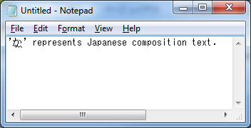
Fig. 3Composition text (Japanese)
An example of a phonetic composer for mathematical symbols
outputs composed mathematical symbol and shows the source
keystrokes in its own window, which is an example of a composition
window.
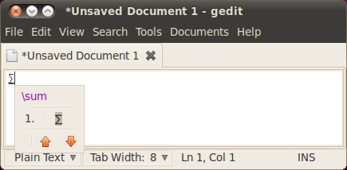
Fig. 4Composition text (Latex input)
2.1.2 Radical Composer
Radical composers are mainly used for typing Traditional
Chinese and Korean with phonetic keyboards. Each phonetic
keyboard of these languages can produce phonetic radicals:
e.g., typing ‘r’ produces ‘ㄱ’
on a Korean keyboard; typing ‘o’ produces
‘人’ on a Traditional-Chinese (or Bopomofo)
keyboard, etc. A radical composer composes a phonetic
character from phonetic radicals given by these keyboards:
e.g., typing ‘ㄱ’ (r) and ‘ㅏ’
(k) produces ‘가’ on a Korean keyboard;
typing ‘人’ (o), ‘弓’ (n), and
‘火’ (f) produces ‘你’ on a
Traditional-Chinese keyboard, etc.
A radical composer for Korean outputs the phonetic radicals as
its composition text.
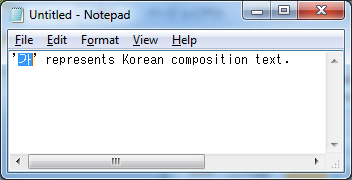
Fig. 5Radical composer (Korean)
A radical composer for Traditional Chinese outputs a
placeholder character (U+3000) and shows the phonetic radicals
being composed to its own window. This window is an example
of a composition window.
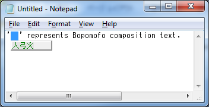
Fig. 6Radical composer (Traditional Chinese)
Some platforms (such as Mac and Linux) use radical composers
for typing accented characters used in European countries.
For example,
typing ‘ ̈ ’ (option+u) and ‘a’ (a)
produces ‘ä’ on US keyboards of Mac.
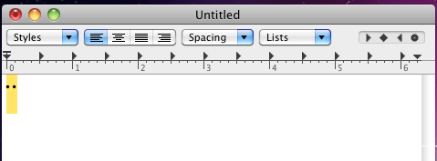
Fig. 7Radical composer (Mac)
2.1.3 On-Screen Keyboard
On touch-based platforms without hardware keyboard like
mobile phone or tablet platforms, some kind of on-screen keyboard
is displayed to help a user typing text, which occupies some
part of the screen. A user uses this keyboard to type composition
text.
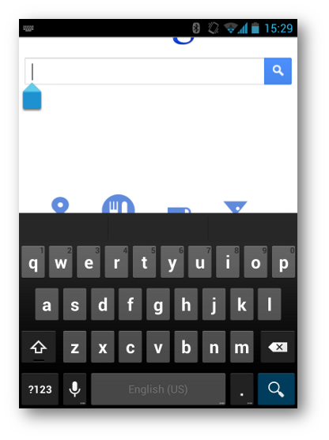
Fig. 8An example of an on-screen keyboard (English)
The layout of an on-screen keyboard may vary depending on
language or its input modality (e.g. a telephone number
input field requires number buttons only).
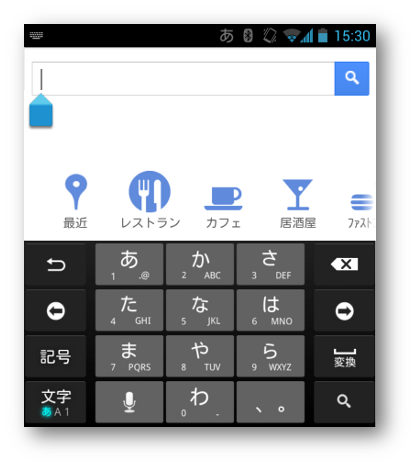
Fig. 9An example of an on-screen keyboard (Japanese)
2.2 Converter
A converter is a context-sensitive parser used for replacing
the outputs of a composer to ideographic characters on Chinese,
Japanese, and Korean.
Note
Korean seldom uses ideographic characters.
Because Chinese, Japanese, and Korean have many homonyms, each
sequence of phonetic characters usually matches many ideographic
characters: e.g., a Japanese
phonetic character ‘か’ matches Japanese
ideographic characters
‘化’, ‘科’,
‘課’,
etc.; Pinyin characters ‘ka’ matches Simplified-Chinese
ideographic characters ‘卡’,
‘喀’,
‘咯’, etc.; Bopomofo characters
‘人弓’ matches Traditional-Chinese
ideographic characters ‘乞’,
‘亿’, ‘亇’, etc.
A converter looks up a dictionary and shows a list of
candidates of possible ideographic characters so a user can choose
one. This list is known as a candidate
list.
A candidate list is known as a candidate
window when it has its own window.
Some Japanese IMEs show annotations in its
candidate window
for a character that is not so easy to distinguish from other
characters (such as full-width alphabets, full-width Katakanas,
and half-width Katakanas, etc.), as shown in the following
figure.
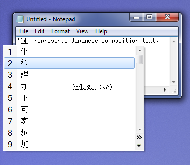
Fig. 10Candidate window (Japanese)
The next figure shows a candidate
window of a Simplified-Chinese IME.
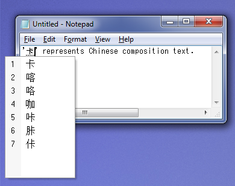
Fig. 11Candidate window (Simplified Chinese)
And the next figure shows a candidate
window of a Traditional-Chinese IME.
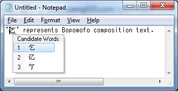
Fig. 12Candidate window (Traditional Chinese)
Some techniques are used to improve conversion quality.
For example, a converter integrates an MRU
(Most-Recently Used) list.
Even though there are many ideographic characters for each phonetic
character (or phonetic radical), a user does not usually use all
these ideographic characters. A converter uses an
MRU list to filter out ideographic characters not
used so often from a candidate list.
Another example is a grammar parser. A converter that
integrates a grammar parser splits the given phonetic characters
into grammatical clauses and converts only one clause at a time.
When a sequence of phonetic characters consists of n clauses and the
i-th clause has m_i candidates, the total number of the candidates
for the input characters becomes (m_1 * m_2 * … * m_n).
To reduce the number of candidates owned by a converter,
a converter usually processes one clause at a time. This clause is
called the selected clause.
An IME usually renders a selected
clause with a special style to distinguish it from other
clauses, as shown in the following figure.
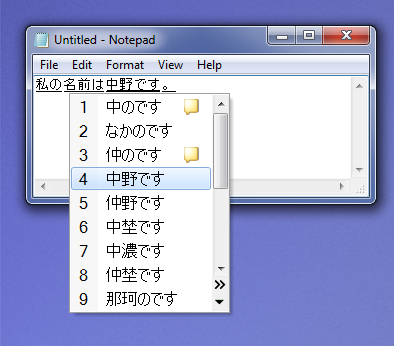
Fig. 13Selected clause (Japanese)
When a converter converts two or more clauses, it chooses
candidates for the selected clause so it becomes grammatically
consistent with the surrounding clauses:
e.g., Japanese converters usually output
‘危機一髪’ (not
‘危機一発’)
for Japanese phonetic characters
‘ききいっぱつ’
because
‘危機一発’ is grammatically
incorrect.
On a mobile platform, candidates may not appear in a separate
window, but occupies some part of the screen for the user to choose
the candidate word that they intend.
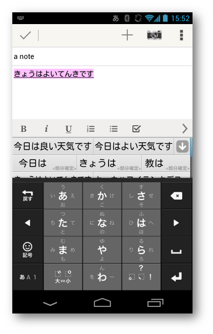
Fig. 14Composition on mobile platform (Japanese)
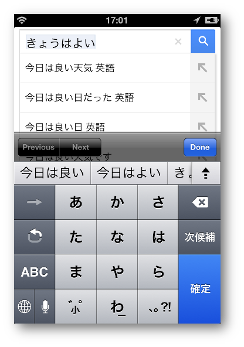
Fig. 15Composition on mobile platform (Japanese)
3. Conformance
As well as sections marked as non-normative, all authoring guidelines, diagrams, examples,
and notes in this specification are non-normative. Everything else in this specification is
normative.
The key words MUST, MUST NOT, REQUIRED, SHOULD, SHOULD NOT, RECOMMENDED, MAY,
and OPTIONAL in this specification are to be interpreted as described in [RFC2119].
More to be written.
4. Terminology and Algorithms
To be written.
5. The inputMethodContext property
Authors can get an object which implements the
InputMethodContext
interface on an editable or
focusable
element, which can get keyboard input first
(i.e. a “target” element).
.
If this property is accessed
on non-editable, non-focusable element, a user agent SHOULD
return a context for the innermost editable or focusable element
to the element. In this case, the target property
in the InputMethodContext
interface points to the target element.
If all ancestors of an element are neither editable nor focusable,
this property returns null.
To control the IME attached to an element, it is a good idea to add
this property to the HTMLElement interface.
To change the behavior of the IME associated with an
element, authors MUST first obtain an InputMethodContext
interface from the inputMethodContext property of
the HTMLElement interface.
The returned InputMethodContext interface MAY not be directly
associated to the element. An interface MAY be shared
among elements under an innermost editable or focusable element.
In that case, target property in the
InputMethodContext interface points to the element which owns
the interface.
6. The Composition Interface
This interface represents an ongoing IME composition. It provides
attributes representing the text being composed by an IME and
its associated information.
Represents the 0-based index to the next position of
the last character of the selection in the current composition
text.
If there is no selection, selectionStart and selectionEnd MUST
be the same value and they indicate the position of the caret.
For example, if “DEF” is selected in composition
text “abcDEFghi”, selectionStart is 3
and selectionEnd is 6.
If the caret is between “B” and “C”
in composition text “ABCD”, both
selectionStart and selectionEnd are 2.
Represents the 0-based index to the first character of
the selection in the current composition text.
Note
An author can assume that
selectionStart and selectionEnd
boundary fit in with any of segments, and
that selectionStart is equal or less than
selectionEnd.
Represents the text being composed by an IME.
The text attribute of this node is equal to the text
attribute of a compositionupdate event when this is referenced
in compositionupdate's event handler.
6.2 Methods
getSegments
If composition text is segmented into clauses by an IME,
this array contains 0-based indices of the starting character of
each clause in increasing order. If composition text is not
segmented, it contains one '0' element.
Note
This can be used to render compostion text as
segmented clauses, but how to visualize them are not specified
here. It is recommended to follow the platform standard way to
visualize the segmentation (e.g. using underline or reverse
background etc.).
Note
The way the platform standard renders composition
text might be customized by a user (e.g. for accessibility).
CSS property to indicate the current default style to render
the composition is desired.
Once a target element gets deleted or modified not to accept
any input, any access to the
InputMethodContext
interface through the object has no effect. Any method calls
will just return, accesses to composition and
target will return null, and accesses to
locale will return the empty string.
7.2 Methods
confirmComposition
Finishes the ongoing composition of the hosting user agent.
This may cause the race condition when a script
calls confirmComposition while system IME gets accept key in the
same time, a user agent may confirm the ongoing composition twice.
Instead,
introducing cancelComposition() is proposed
and when a script needs the behavior of confirmComposition(), it
can commit the current composition and then call
cancelComposition().
Notifies the rectangle of composition text to a user agent. When
a user agent renders a
candidate window
or a composition window, it uses
this rectangle to draw windows next to the composition or
prevent these windows from being rendered on this rectangle.
If a Web application wants to render composition text itself,
it has to tell a user agent where the composition text will be
located whenever it gets compositionstart event
or compositionend event.
On Windows, this rectangle is used as a parameter for
ImmSetCandidateWindow(). On Mac, this rectangle is sent when it calls
[firstRectForCharacterRange:]. On Linux (GTK), this rectangle is used as a
parameter for gtk_im_context_set_cursor_location().
The anchor parameter represents the DOM node
against which the rectangle is positioned. This MAY
be a different node than the node that listens to composition
events which has focus and therefore a Web application can
draw composition text where it does not have focus.
The x, and y are the offsets to the
top-left of the rectangle relative to anchor
node's top-left.
The w, and h are width and height of
the rectangle.
These set values apply only to the current
composition session (i.e. until compositionend
event is sent).
A user agent MAY need to convert these
coordinates to the screen coordinates when it shows a
candidate window.
Gives a hint for a user agent to avoid showing any input
related UI elements (e.g. on-screen keyboard, a candidate window)
on the given rectangle, for an application to show some
input-related UI elements (such as search suggestions) in the
rectangle.
A user agent MAY use this hint to explicitly control the
position for a candidate window, or determine zoom level
and view port when on-screen keyboard comes in.
These set values apply only to the current
composition session (i.e. until compositionend
event is sent).
The anchor parameter represents the DOM node
against which the rectangle is positioned.
The x, and y are the offsets to the
top-left of the rectangle relative to anchor
node's top-left.
The w, and h are width and height of
the rectangle.
This specification provides an interface for developing IME-aware
Web applications.
This section describes practices for some use-cases.
8.1 Life of InputMethodContext
This section is non-normative.
Once a InputMethodContext interface is obtained,
it should be valid for the lifetime of its target
element's lifetime, as long as the element is editable or focusable.
Once the target gets disabled,
authors MAY NOT access an IME through the interface even after the
target gets enabled again. Once the target is deleted,
any access to the interface is void.
Any access to the InputMethodContext interface makes sense
mostly when the target element has focus. In other words,
it makes little sense if you access the interface when the target
element doesn't have focus.
8.2 Drawing Composition Text
Note
As of this writing, the order of
compositionupdate event and DOM update is being
discussed
(see Bug 18931)
and if compositionupdate event happens after
DOM modification, this section has to be rewritten using
beforeInput event, which is also being discussed.
Example 2 code should be updated as well.
If a Web application wants to draw composition text by itself,
it SHOULD handle the compositionupdate event
to get notified from the IME that the composition text has been
changed, and then
use the interface described in this document to retrieve
composition and let the IME know
where the composition text is drawn by calling
setCaretRectangle() method.
If setCaretRectangle() is not called, IME will not have
information about where to show IME UIs, and it may show UIs at
an obtrusive position. To avoid this situation, a user agent may
set some decent default position in the vicinity of the focused
input field.
Optionally it MAY call
setExclusionRectangle() method to hint to the IME
that a certain area is not suitable for showing the IME UI.
When a Web application draws composition text, it MUST call
preventDefault() in compositionupdate
handler so that the user agent will not draw the text.
When a Web application wants to handle DOM level3 composition events
on a non-<input>, <textarea>,
or contenteditable node,
it MUST add inputmode attribute with a proper value
and move focus to it to get composition events.
The following diagram shows the flow of events
among the keyboard, the IME, the user agent, and the Web application
when a user types
‘kyouha’ to convert to
‘今日は’.
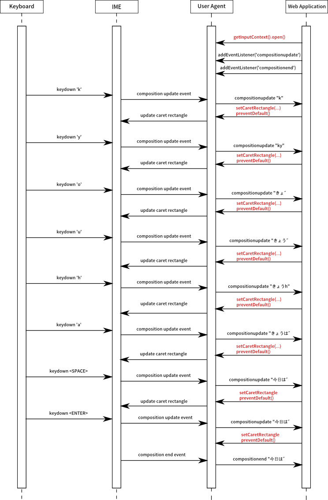
Fig. 16Event flow of IME and an IME-aware Web application.
A. Revision History
The following is an informative summary of the changes since the last
publication of this specification. A complete revision history of the
Editor's Drafts of this specification can be found
here.
Example/use cases/best practices
Removed Javascript IME use-case
Removed example1 (drawing composition text in <canvas>)
Added example code for drawing composition text.
Added an explanation of InputMethodContext's scope in best practices section.
Marked composition and target attributes as nullable.
Clarified that context is associated with one editable or focusable element.
Clarified the scope of setCaretRectangle()'s coordinates.
Removed confusing 'enabled' property and open() method in favor of
usual focus control and inputmode attribute.
Changed composition interface. the 'text' property was changed to plain
DOMString from Node, the 'caret' property was divided into the
'selectionStart' and the 'selectionEnd' properties. Added the 'segments'
property to represent the position of segmentation of composition text.